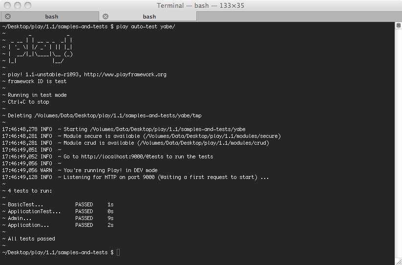
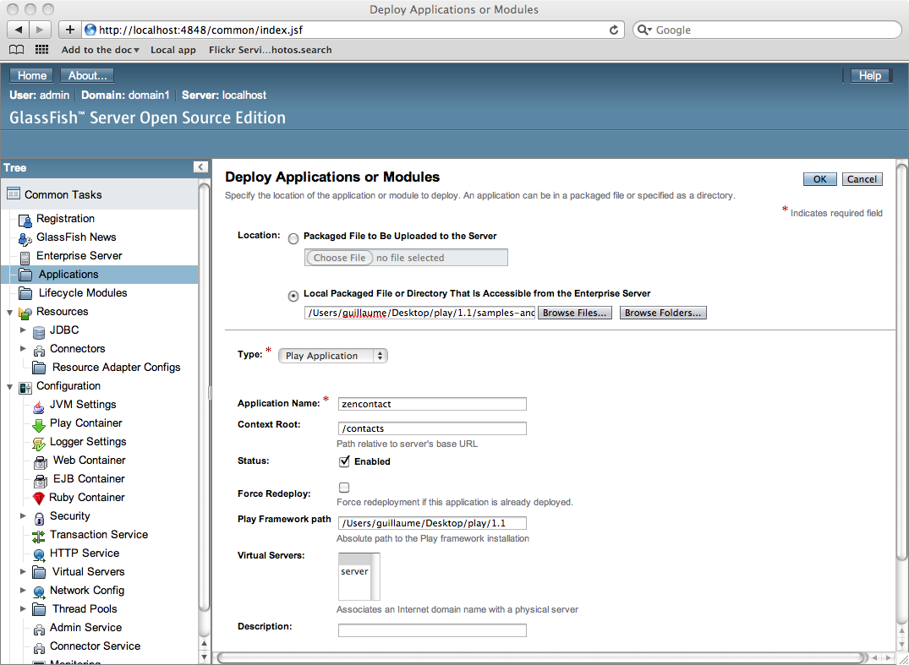
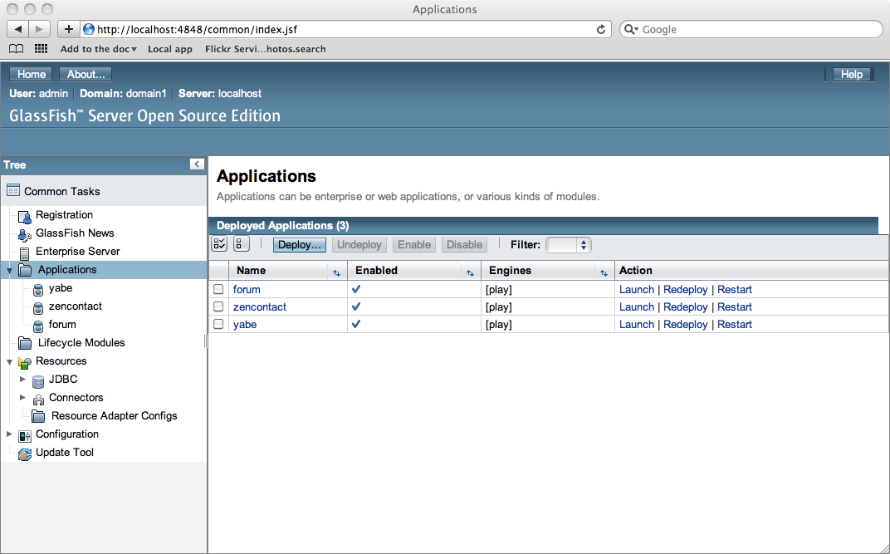
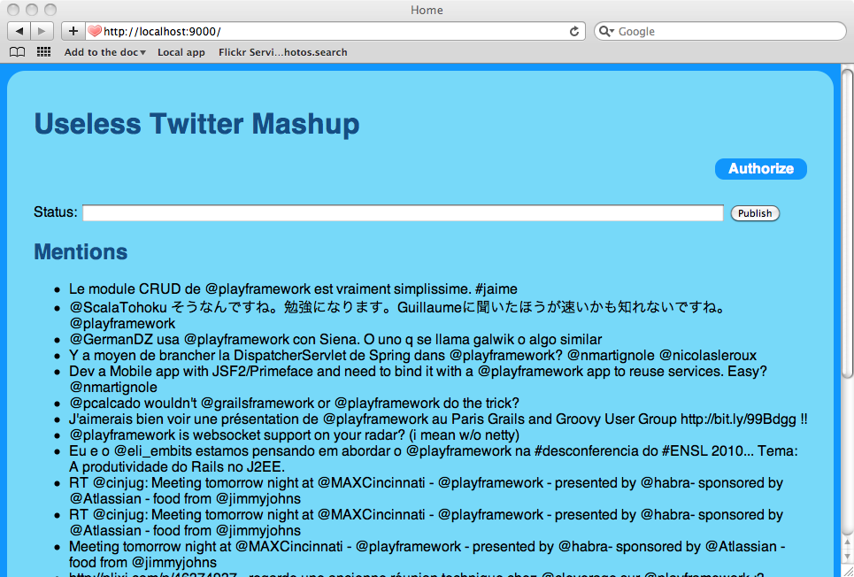

Play 1.1 — Release notes
You can read about the bugs fixed in Play 1.1 on the road map page. This page highlights the most important changes.
Migrating from Play 1.0.x
Migrating from Play 1.0.x is pretty straightforward. There are no changes to the application layout, so the same application will run on Play 1.0.3.2 or Play 1.1. However if you use any external modules in your application, you may have to use more recent versions that are compatible with Play 1.1. Check the corresponding module pages.
- Some APIs have been removed in Play 1.1, after having been deprecated for a long time, but most of the public API is the same. If you have compilation errors that you don’t know how to solve, ask on the Google group.
- Plugin order has been changed. If you have a specific plugin that need to run before or after a default one, perhaps you will need to change its index.
- In play.libs.IO, a lot of methods that used to throw checked exceptions are now throwing runtime exceptions. If you were catching the exception you may need to change the exception class or stop catching it.
- In production mode, the database is no longer automatically updated when the model changes. If you want this behavior, add this line to your your application.conf:
jpa.ddl = update
New headless test runner
As you know, the Play test runner requires a browser to run application tests. This is because of the Selenium test support, which makes it possible to really test your application running in a browser.
However, for continuous integration, it’s sometimes difficult to automatically run a real browser on the integration server. So, since this release, Play embeds a stand-alone headless browser based on HtmlUnit.
When you run tests with play auto-test, this browser will be used.

Note that the headless browser try to behave like Internet Explorer 8. It’s a good thing because as most developers use and test locally on a real browser like Firefox or Webkit, it allows to check obvious JavaScript compatibility issues on the integration platform.
New HTTP server based on JBoss Netty
The Play 1.1 release uses JBoss Netty instead of Apache Mina as HTTP server. This should not change anything for your application, and the performance of the HTTP layer be the same as before. However, this fixes some small HTTP bugs that affected Play 1.0.x.
This new HTTP server will allow us the support more advanced HTTP features soon, such as WebSockets.
Updated core libraries and improved naming
As Play framework is a full-stack framework it directly embeds the required Java libraries. All of these libraries have been updated, including the new Hibernate 3.5.x release that provides JPA 2 support.
We have also adopted a better naming conventions for embedded libraries. If you look in the framework/lib directory you can now see what the exact version of each library is.
New database-agnostic play.db.Model API
Play 1.1 introduces a new play.db.Model API. This API is not intended to be used directly by applications, but it provides a generic datastore interface that can be implemented by module’s creator to provide integration with any kind of datastore (including NoSQL based ones).
This means that in Play 1.1, JPA support is totally decoupled from the core framework. It is still a default plugin, and is activated automatically if it detects any @Entity class, but some features such as CRUD and Fixtures no longer directly depend on JPA. These components can work with any module that provides an implementation ok play.db.Model, such as the play-morphia module for MongoDB.
Scala language support
The core framework internals have been refactored to work with the Scala language. The Scala module provides complete integration for Scala with the Play framework.
Native Glassfish deployment support
Play has now a native container for the Glassfish application server. This means that by adding the Play container to any Glassfish server you can deploy any existing Play application on it.

The Glassfish container is hosted at http://github.com/playframework/play-glassfish, and should be soon available directly in the Glassfish contrib repository.
Because Glassfish allows to run several applications simultaneously, you can now run several Play applications in a single JVM.

Note that this is different from packaging your application as a WAR file. The Play container for Glassfish runs applications natively: it doesn’t use a Servlet container, and does not require that you package your application in a particular way.
Virtual hosting in routes
The routes file now supports Host matching. this can be useful if action parameters must be extracted from the host parameter. For example, for a SAAS application, you could use:
GET {client}.mysoftware.com/ Application.index
and then automatically retrieve the client value as for any other request parameter:
public static void index(String client) {
…
}
When using the @@{…} notation (absolute reverse routing) in a template, the host will be used if provided by the corresponding route. This can be useful in several situations.
For example, if you want to use a content distribution network to distribute your static assets in production, you could write a routes file like this:
#{if play.Play.mode.isDev()}
GET /public/ staticDir:public
#{/}
#{else}
GET assets.myapp.com/ staticDir:public
#{/}
And in your templates:
<img src="@@{'/public/images/logo.png'}">
This will be reversed as http://locahost:9000/public/images/logo.png in DEV mode, and http://assets.myapp.com/images/logo.png in PROD mode.
Support for custom binding
The binding system now supports more customization.
@play.data.binding.As
The first thing is the new @play.data.binding.As annotation that makes it possible to contextually configure a binding. You can use it for example to specify the date format that must be used by the DateBinder:
public static void update(@As("dd/MM/yyyy") Date updatedAt) {
…
}
The @As annotation also has internationalisation support, which means that you can provide a specific annotation for each locale:
public static void update(
@As(
lang={"fr,de","en","*"},
value={"dd/MM/yyyy","dd-MM-yyyy","MM-dd-yy"}
)
Date updatedAt
) {
…
}
The @As annotation can work with all binders that support it, including your own binder. For example, using the ListBinder:
public static void update(@As(",") List<String> items) {
…
}
This binds a simple comma separated String as a List.
@play.data.binding.NoBinding
The new @play.data.binding.NoBinding annotation allows yous to mark non-bindable fields, resolving potential security issues. For example:
public class User extends Model {
@NoBinding("profile") public boolean isAdmin;
@As("dd, MM yyyy") Date birthDate;
public String name;
}
public static void editProfile(@As("profile") User user) {
…
}
In this case, the isAdmin field will never be bound from the editProfile action, even if an malicious user includes a user.isAdmin=true field in a fake form post.
play.data.binding.TypeBinder
The @As annotation also allows you to define a completely custom binder. A custom binder is subclass of TypeBinder that you define in your project. For example:
public class MyCustomStringBinder implements TypeBinder<String> {
public Object bind(String name, Annotation[] anns, String value,
Class clazz) {
return "!!" + value + "!!";
}
}
You can use it in any action, like:
public static void anyAction(
@As(binder=MyCustomStringBinder.class) String name) {
…
}
@play.data.binding.Global
Alternatively, you can define a global custom binder that will apply for the corresponding type. For example, you define a binder for the java.awt.Point class like this:
@Global
public class PointBinder implements TypeBinder<Point> {
public Object bind(String name, Annotation[] anns, String value,
Class class) {
String[] values = value.split(",");
return new Point(
Integer.parseInt(values[0]),
Integer.parseInt(values[1])
);
}
}
As you see a global binder is a classical binder annotated with @play.data.binding.Global. An external module can contribute binders to a project, which makes it possible to define reusable binder extensions.
New powerful async WS library
The play.libs.WS library allow your Play application to behaves like a web client. In this release we have introduced a new asynchronous implementation based on AsyncHttpClient. This new implementation provides new xxxAsync methods that allow you to fetch remote resources asynchronously.
When combined with the waitFor(…) feature, you can use this to build high performance non-blocking applications that mash-up existing applications:
public static void mirrorFeed() throws Exception {
if (request.isNew) {
Future<HttpResponse> feed = WS.url(
"http://planet.playframework.org/feed"
).getAsync();
request.args.put("futureFeed", feed);
waitFor(feed);
} else {
HttpResponse res = (
(Future<HttpResponse>)request.args.get("futureFeed")
).get()
renderXml(res.getXml());
}
}
OAuth support
There is now a play.libs.OAuth library that provides OAuth protocol support. OAuth is an open protocol to allow secure API authorization in a simple and standard method from web applications.
A new twitter-oauth sample application demonstrates the API usage by connecting securely to the twitter API.

HTTPS support
The built-in server now supports the HTTPS protocol. You can of course use it in production if you want. It supports certificate management, either via the classical Java keystore or simple cert and key files. To start an HTTPS connector for your application, just declare the https.port configuration property in your application.conf file:
http.port=9000
https.port=9443
You need to put your certificates in the conf directory. Play supports X509 certificates and keystore certificates. The X509 certificates must be named as follows:
host.cert for the certificate and host.key for the key. If you are using keystore, then, by default it should be named certificate.jks.
If you are using X509 certificates, then the following parameters can be configured in your application.conf file:
# X509 certificates
certificate.key.file=conf/host.key
certificate.file=conf/host.cert
# In case your key file is password protected
certificate.password=secret
trustmanager.algorithm=JKS
If you are using keystore:
keystore.algorithm=JKS
keystore.password=secret
keystore.file=conf/certificate.jks
Note that the values above are the default values.
You can generate self-signed certificates using openssl:
openssl genrsa 1024 > host.key
openssl req -new -x509 -nodes -sha1 -days 365 -key host.key > host.cert
If you are using the Java keystore mechanism, then the following properties can be configured in your application.conf file:
# Keystore
ssl.KeyManagerFactory.algorithm=SunX509
trustmanager.algorithm=JKS
keystore.password=secret
keystore.file=certificate.jks
The values above are the default values.
New Cache features
There are two new features that enable easier cache integration for actions and templates. First you can easily cache the result of an action by adding the @play.cache.CacheFor annotation. This is very useful for pseudo static pages.
@CacheFor("1h")
public static void index() {
render();
}
Second, there is now a new #{cache} tag that allows to easily cache template fragments:
<h1>Very complex home page to build</h1>
#{cache 'home-' + connectedUser.email, for:'15min'}
…
#{/cache}
These new features use the same cache implementation as the standard Play cache.
WAR archives are fully precompiled
The play precompile command now really compile your applications to static Java bytecode. This means that you can distribute a Play application fully-compiled, and that you can remove all app/ source files, including templates.
All WAR files generated by the play war command are now automatically precompiled.
By default, when you run an application the standard way, Play will always check the application source code to detect changes. If you don’t care about this step and you want to start your application from precompiled classes, you can specify the precompiled=true system property:
play start myApp -Dprecompiled=true
Global route arguments
The new play.mvc.Controller.routeArgs scope allow to define arguments that will be used globally for any reverse routing during the request. For example, if you have a common parameter for a lot of routes:
GET /{lang}/ Application.index
GET /{lang}/users Application.users
GET /{lang}/items Application.items
You can omit the lang parameter for each action, and manage it in a single @Before filter:
@Before
static setLang(String lang) {
Lang.set(lang);
routeArgs.put("lang", lang);
}
By adding the lang argument to the routeArgs scope, it will automatically be used for reverse routing, even if not specified:
<a href="@{Application.users()}">Users list</a>
will be, for example, reversed as:
<a href="/fr/users">Users list</a>
More flexibility to write custom commands
Module creators now have more flexibility to write custom Python commands. A commands.py file contributed by a module can hook into any existing built-in command. Also, commands contributed by modules are now listed by the play help command.
Other small features
There are also some small new features as well as 230 fixed bugs, including:
- support for namespaces in the
play.libs.XPathlibrary - support of the
nevervalue in Jobs scheduling - mime type to serve static resources can be defined in
application.conf - helpers for cross-domain XHR in
play.mvc.Http.Response - support for HTTPOnly cookies
- new command
play checkto check for new Play framework releases.